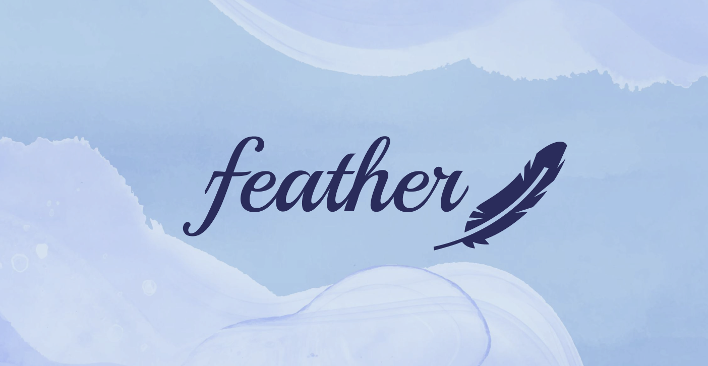
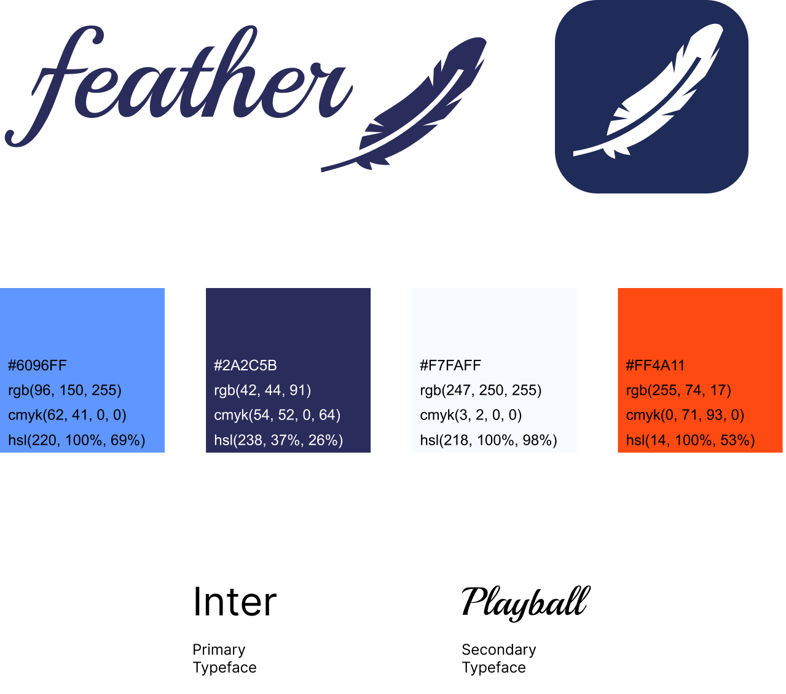
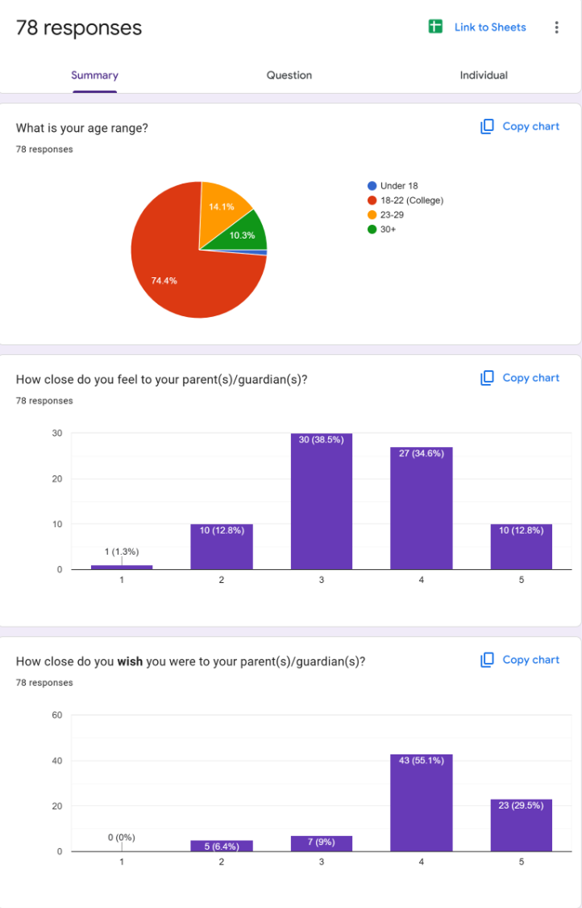
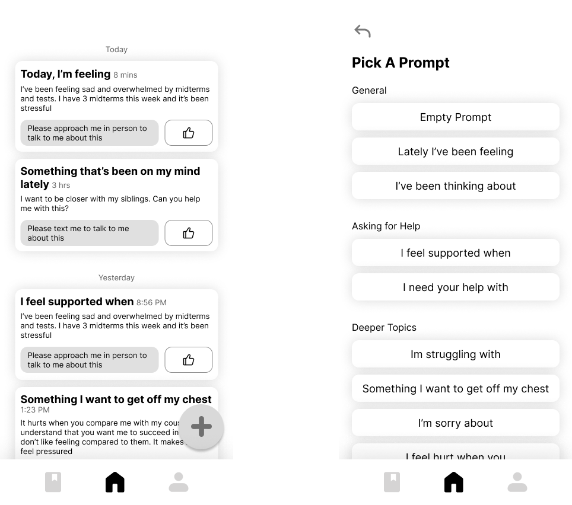
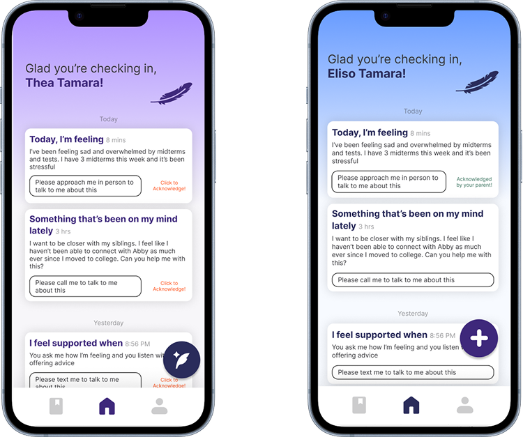

Feather was the culmination of a 48 hour long UI/UX project completed for the Davis Design Fest. The event consisted of several 4-person teams interpreting a single design prompt and competing to create the best app web flow. At the beginning of the project, I was unfamiliar with design tools such as Figma and Canva, luckily I was paired with someone with design expertise. Under her guidance, I began to understand the UI/UX design process and we started brainstorming ideas.

After we had a plan, we started data on our audience, college-aged students. We then decided gather more data at a deeper level and I was tasked with conducting audience interviews. At random, I interviewed several members of the Davis community on how effective they felt our app was and how easily they were able to navigate through the wireframe’s pages.

With a better understanding of our audience and an idea of where the strengths and weaknesses of our first design lay, moved onto to the mid-fidelity prototype. After another round of user-testing, we added all the features we wanted in the final product for the high-fidelity prototype.

The high fidelity prototype included a standardized color scheme focusing on soothing blue tones, a finalized logo, and some basic interactions. My role in this stage consisted mainly of proofreading, developing visual assets, and testing interactions.

GThrough the Davis Design Fest I learned how to use Figma, the basics of UI/UX design, and how to produce a project under immense time pressure. In the end, my team was acknowledged for producing a high quality product despite the overall inexperience of its members.
View the final prototype